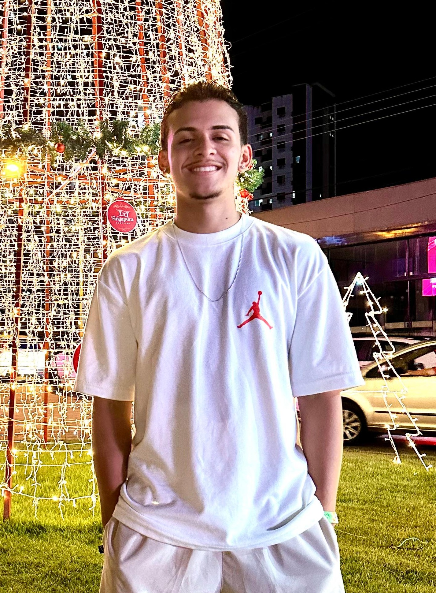

Customer Service · Sales · Remote Support
Objective
To work in remote opportunities in customer service, sales, or support, applying my hands-on experience, effective communication, and problem-solving skills to contribute to company growth and customer satisfaction.
Summary
Professional with approximately 7 years of experience in customer service, sales, and telemarketing across different settings, focusing on relationship building, negotiation, retention, and results. I have a track record with targets and commission-based pay, delivering positive outcomes in fast-paced commercial environments. I stand out for persuasive communication, ease in dealing with the public, and the ability to understand customer needs and turn opportunities into results. I have experience with digital tools, including WhatsApp Business, as well as online service routines and contact management. I am comfortable with technology, a quick learner, and disciplined for remote work. I am currently studying Public Management at Faculdade Gran Cursos, seeking continuous improvement and a more administrative and strategic outlook. I am goal- and results-driven, focused on adding value to the company and delivering a high-quality customer experience.
Behavioral profile
Communicative, proactive, and persuasive, with ease in dealing with the public and working toward targets. I am well organized, responsible, and adaptable, staying focused on results and continuous professional growth.